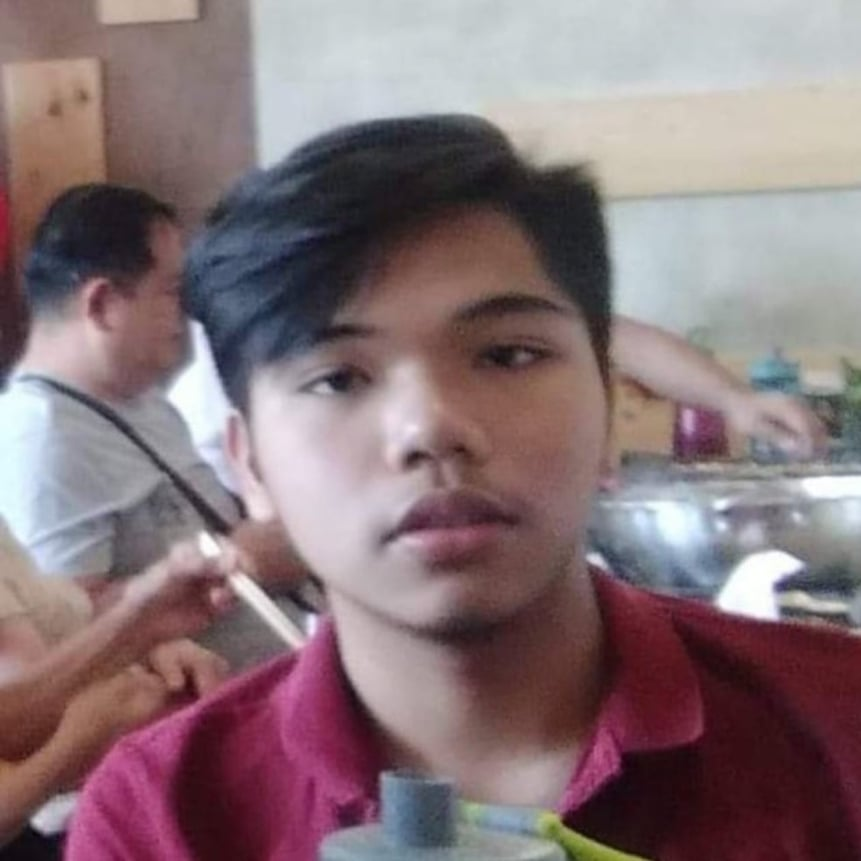

About Me
Hello, my name is Xye C. Rapada, I live in Barraca, Villasis, Pangasinan and I am 20 years old now. My hobbies are playing computer games, biking to different places to enjoy the view, sleeping, and eating. I am sometimes lazy enough to do nothing for a whole day and it is kind of bad for me because there are activities that I am missing out. I listen to music a lot, but I am not good at singing or playing instrument and that is okay, at least I support the ones who make it. While playing online games, I met a lot of good people online. They are funny, and sometimes helpful when I need someone to talk to. There is a weird thing about me, it is about when I am traveling, I like the travel time more than the time that I spend in a certain place. I love to watch anime in my free time, it boosts me with excitement seeing such thrilling scenes and with that I have energy to do certain task that I am going to do. I really love spending time alone in my room, it makes me feel free from anything else and I have the right to spend my time on things that I want to do. I do spend a lot of time playing games but I do not leave my studies alone because knowledge is all that I am going to carry in this life, games are just everywhere so still my priority is to finish my studies in time. I have supportive parents and I am super lucky to have them by my side at all times. they do not put a stop on what I do, they just guide me and it is a beautiful thing.